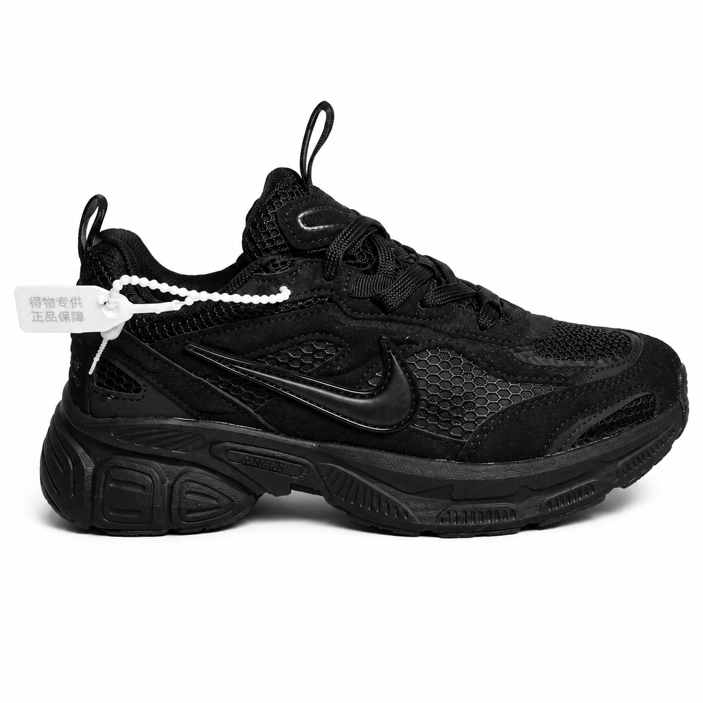
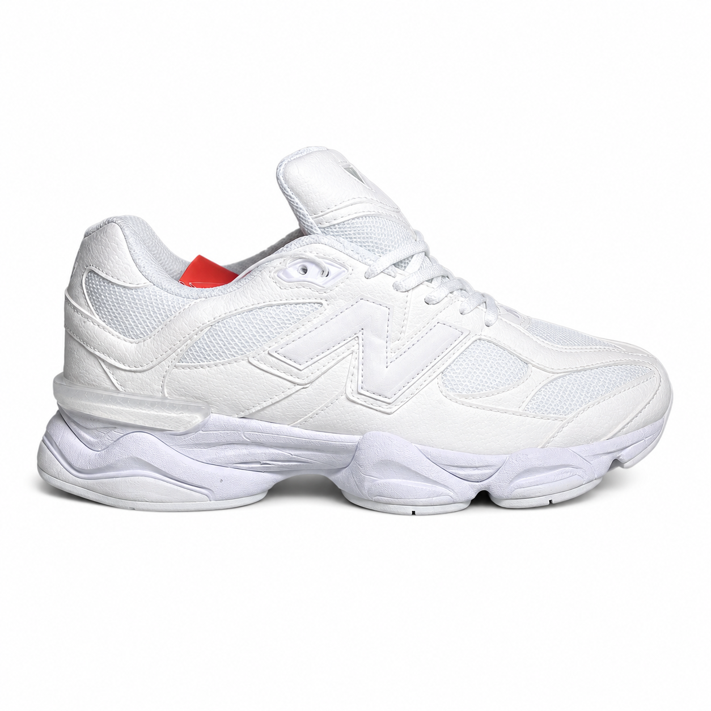
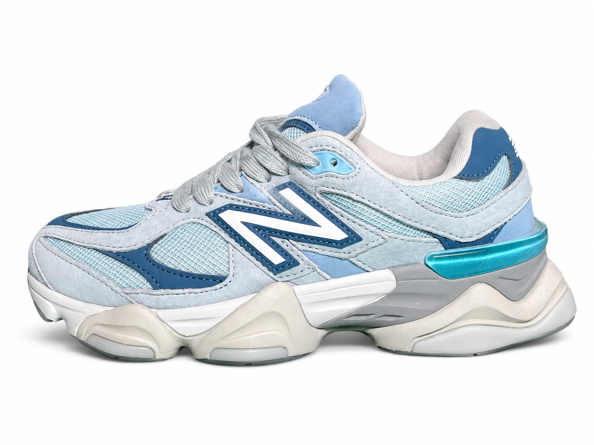

NIKESNEAKERS

NEW BALANCE
NEW BALANCE
NIKE
NEW BALANCE
NEW BALANCESelecciona el modelo y la talla.
Haz clic en el botón y envíanos tu consulta.
Confirmamos disponibilidad, precio y método de pago.
Envíos a todo Costa Rica de forma rápida y segura.